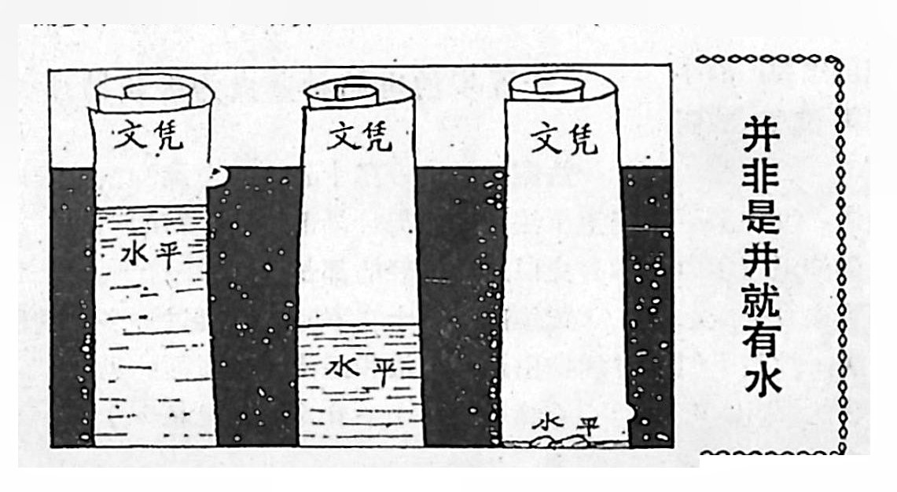

佚名 《人事》1986年第8期（总第11期），第47页
并非是井就有水
Not Every Well Has Water
- Text in the drawing
- 文凭 / 水平 (×3)
Diploma (×3) / Level (×3) - Description
- Three cylinders, each labeled 文凭 (diploma), hold water labeled 水平 (ability) at very different levels; the third is almost dry.
- Artist
- Unattributed 佚名
- Published in
- 《人事》1986年第8期（总第11期）, p. 47
- Themes
- Diplomas and credentials

Cite
Unattributed, “并非是井就有水” [Not Every Well Has Water], Renshi (Personnel) 《人事》, 1986, no. 8, p. 47.